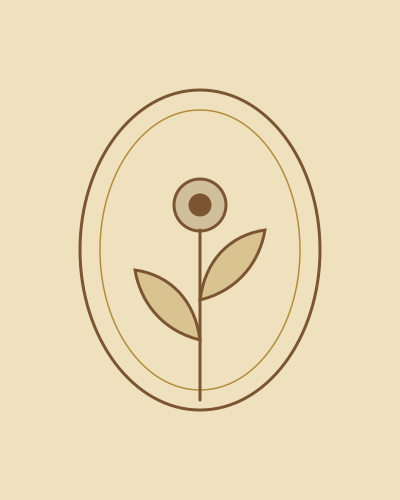

Doctor Joseph yawo kague
Une année de plus, et toujours cette lumière qui rend les souvenirs plus doux.
Que cette nouvelle année s’ouvre comme un vieil album : des pages pleines de rires, de lumière et de moments qu’on a envie de garder pour toujours. Tourner la page